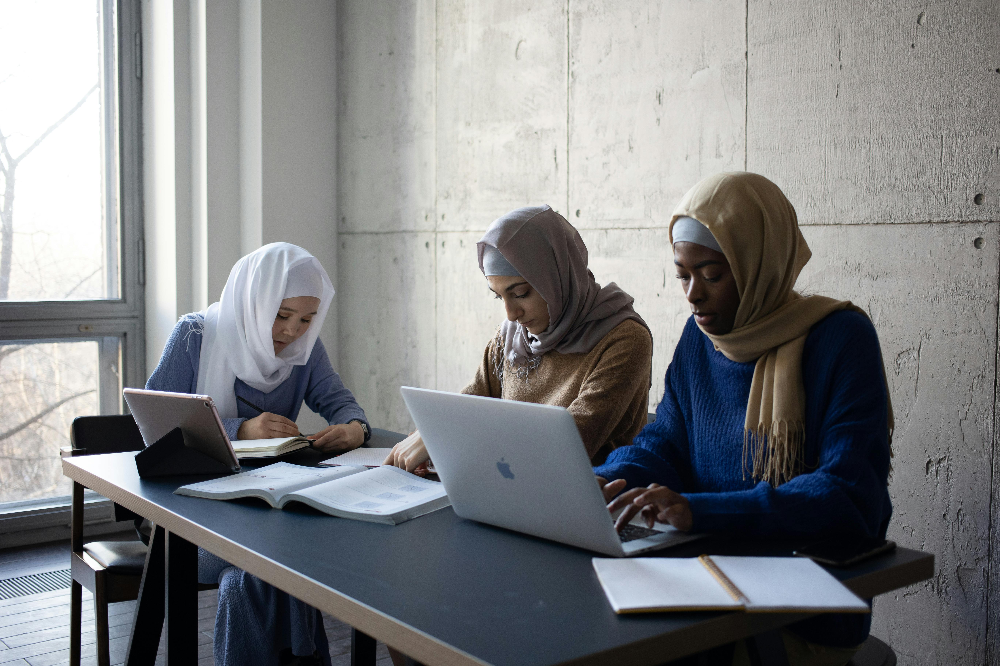
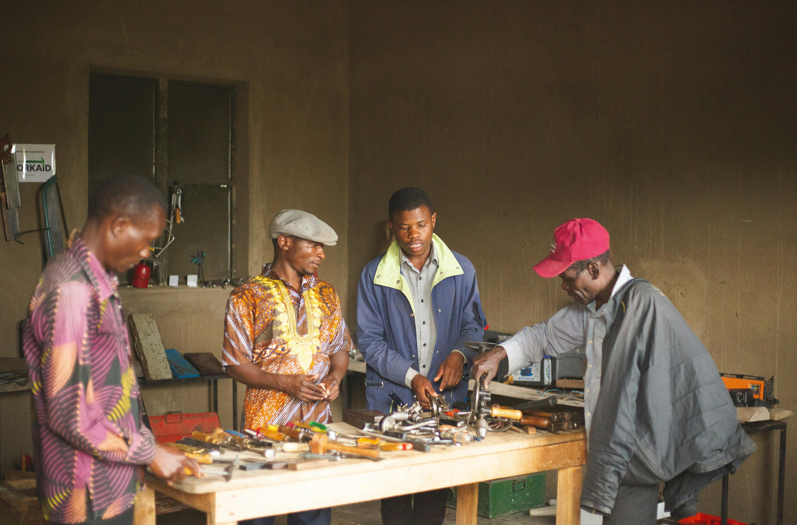
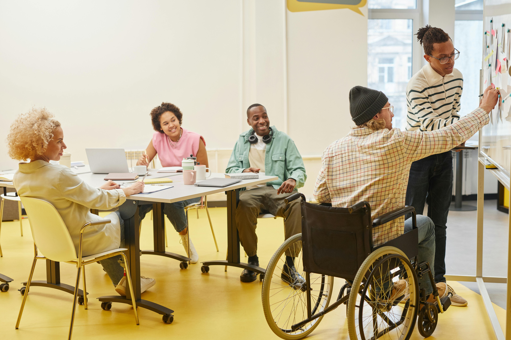
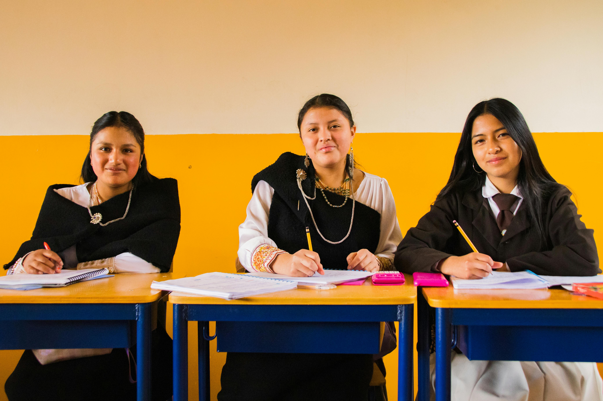
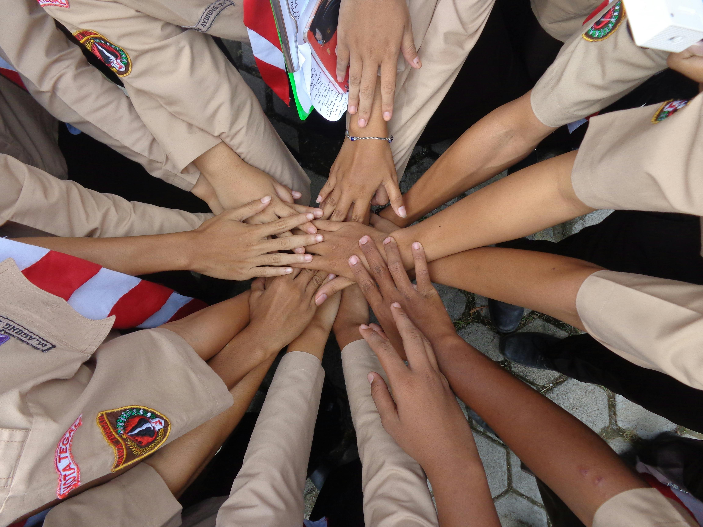

Quality Education for All
Working towards UN Sustainable Development Goal 4: Ensuring inclusive and equitable quality education
📖 Jump to Section
Target 4.4: Skills for Financial Success
What Does Target 4.4 Aim to Achieve?
By 2030, the United Nations aims to substantially increase the number of youth and adults who have relevant skills, including technical and vocational skills, for employment, decent jobs and entrepreneurship. This target recognises that traditional academic education alone is no longer sufficient in today's rapidly changing job market.
Why This Matters Today
The world of work is transforming faster than ever before. Automation is replacing routine jobs, artificial intelligence is creating new roles we couldn't imagine a decade ago, and the gig economy is changing how people earn a living. In this environment, having the right skills isn't just helpful—it's essential for survival.
Who Is Most Affected?
The skills gap doesn't affect everyone equally. Young people face the highest unemployment rates in most countries. Women are disproportionately represented in low-skilled, low-paid work. Rural communities often lack access to quality vocational training. People with disabilities face additional barriers to skills development and employment.
Practical Actions Students Can Take
- Identify In-Demand Skills - Research what employers in your region actually need by looking at job postings in your desired field.
- Leverage Free Online Learning - Platforms like Coursera, edX, Khan Academy, and Google Digital Garage offer free courses with certificates.
- Join a Skills-Sharing Group - Form a study group where each person teaches a skill they already know to others.
- Pursue Internships - Real-world experience often matters more than certificates. Look for internships or volunteer positions.


Overcoming Common Barriers
Target 4.5: Eliminate Discrimination in Education
What Does Target 4.5 Aim to Achieve?
By 2030, the United Nations aims to eliminate gender disparities in education and ensure equal access to all levels of education and vocational training for vulnerable groups, including persons with disabilities, indigenous peoples, and children in vulnerable situations. This target recognises that education cannot be truly universal if certain groups face systematic barriers to participation.
Forms of Educational Discrimination
Gender-Based Discrimination
Gender discrimination in education takes many forms. In some regions, families prioritise boys' education over girls'. In others, girls face harassment or violence on the way to school or inside classrooms. Even in countries with formal equality, subtle biases persist—girls may be steered away from STEM subjects, while boys may be discouraged from pursuing arts or caring professions.
Disability-Based Discrimination
Students with disabilities face physical barriers (inaccessible buildings), communication barriers (lack of sign language or Braille), and attitudinal barriers (low expectations from teachers). Many schools lack trained special education teachers or assistive technologies.
Discrimination Based on Economic Status
Poverty creates multiple educational barriers. Families may need children to work rather than attend school. Uniforms, books, transportation, and exam fees can be prohibitive. Hungry children struggle to concentrate. Students experiencing housing insecurity face additional challenges.


What Students Can Do to Promote Equal Access
- Challenge Biased Language - When you hear discriminatory comments, speak up respectfully.
- Advocate for Accessible Materials - Ask your school for textbooks in alternative formats (large print, digital, audio).
- Support Peer Tutoring Programs - Volunteer to tutor students from marginalised groups.
- Learn About Diverse Cultures - Do your own research and share what you learn with classmates.
- Report Discrimination - If you witness discrimination, report it to a trusted teacher or administrator.
Success Stories That Inspire
🏆 Malala Yousafzai
After surviving an assassination attempt by the Taliban for attending school, Malala became the youngest Nobel Prize laureate in history. Her Malala Fund works to ensure 130 million out-of-school girls receive quality education.
🌿 Māori Language Revitalisation
Māori communities in New Zealand created "language nests" where elders teach children exclusively in te reo Māori. This grassroots movement has brought the language back from the brink of extinction.
♿ Disability Rights Advocacy
Students with disabilities at universities worldwide have successfully sued for better accommodations, from accessible housing to sign language interpreters, benefiting all future students with similar needs.
Take Action Today
Your Role in Achieving SDG 4
The Sustainable Development Goals cannot be achieved by governments and organisations alone. Individual actions matter. Every student who develops new skills, every person who challenges discrimination, every community member who supports inclusive education contributes to the global movement.
Five Things You Can Do Right Now
- Learn one new skill - Spend 30 minutes today learning something practical that could help your future career.
- Speak up against discrimination - The next time you witness educational discrimination, say something.
- Share educational resources - Donate old textbooks or share online learning resources with someone who needs them.
- Mentor someone younger - Your knowledge and experience could change a younger student's educational path.
- Stay informed - Follow organisations working on educational equity and share their messages.
